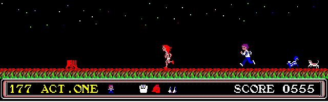 |
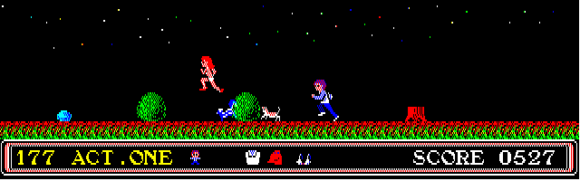 |
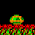 |
みどり亀のミッチェル。つまずくと目覚めて主人公に突進してくる。 動き出したミッチェルにつまずくと即死。 |
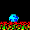 |
つけもの石。つまずくとダメージ。爆弾で壊すと＋１０ |
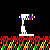 |
大型扇風機の神風３号。主人公の前進を妨げるので飛んでよける。つまずく事はない。 |
| 標識。取ると琴美が家にたどり着くのを妨害できる。 | |
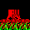 |
木の切り株。つまずくとダメージ。爆弾で壊すと＋１５ |
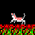 |
猫。追いかけてくる。転ばされるとダメージを受ける。 |
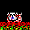 |
犬のスドロコトフスキー。つまずくとダメージ。動き出した犬に転ばされると即死。 |
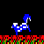 |
スカンクのルドルフ。転ばされるとダメージを受けおならをする。爆弾で壊すと＋２０ |
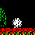 |
スカンクの「おなら」。スカンクに転ばされると出現。触れると即死。爆弾による破壊不可。 |
| もぐらの巣。近づくと「もぐら」が顔を出す。破壊可能。 | |
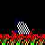 |
もぐら。近づくと出現。つまずくとダメージ。 |
| 墓。つまずくとダメージを受け、人魂が出現する。破壊可能。 | |
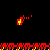 |
人魂。墓につまずくと出現。触れると即死。爆弾による破壊不可。 |